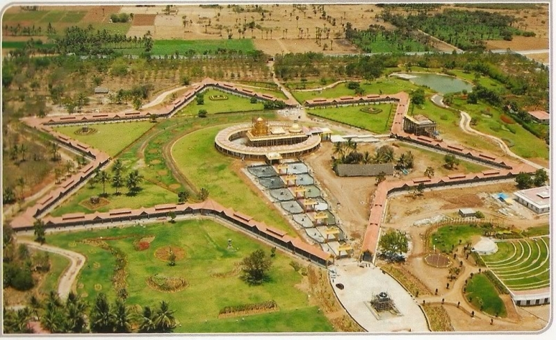
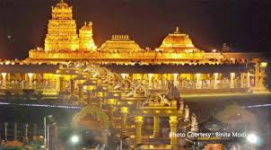
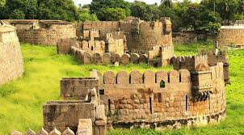
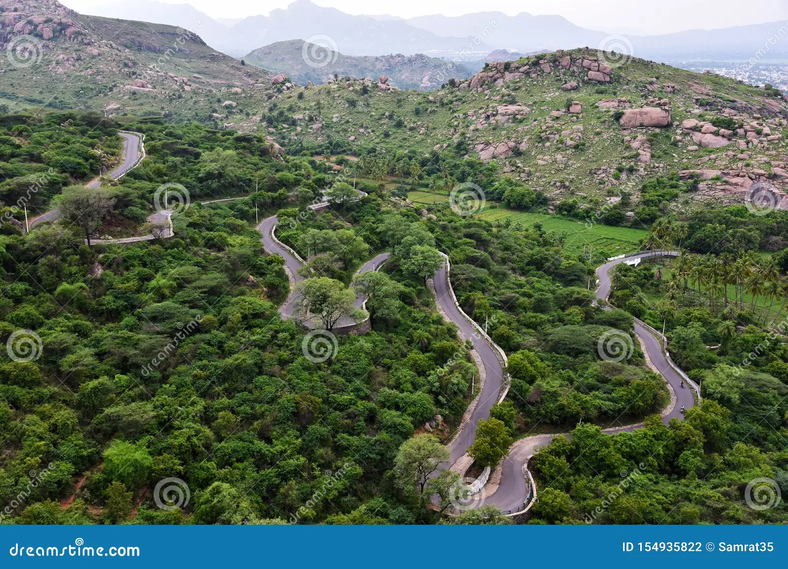

Vellore
- This is a one of town in Tamilnadu
- It is a most developed town in Tamilnadu
- To see the place is Sripuram golden temple
- The golden temple is very beautiful temple in Vellore
- The temple to differt types of darshans in our timeing
- Free darshan temple is avalible to time is 8am to 12pm and 7pm to 8pm
- And 1pm to 6pm only special darshan is avalible the cost of special darshan is 150Rs
- The Golden temple view is the star view of temple
- The Golden temple special is 70kg silavar lord ganapathi
- And 150kg golden lord maha lakshmi it's nice temple in vellore
- The night view of temple is very beautiful
- Near 15km is to see the amaradhi mini zoo logical park
- The cost of entrance is perhead chaild is free of cost and helder is 25Rs
- It's a mini zoo logical park and games also avalible
- The lot of enjoyment in the zoo
- And one more place in vellore is palamathi hills it's nice hills in vellore free of cost
- One more park is periyar park is very nice full nature is beautiful of park
- And vellore fort is also avalible
- And more temples are avalible in vellore
- The city buses is avalible for transports



